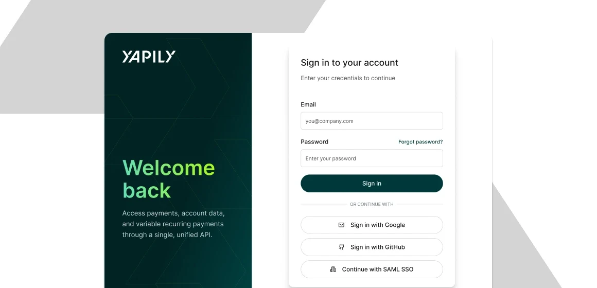
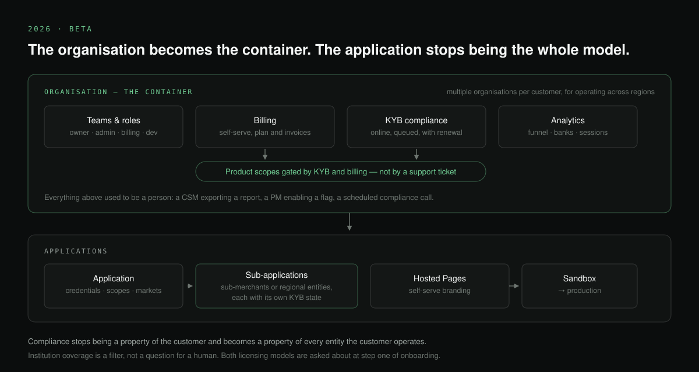
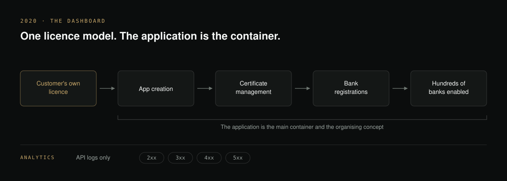
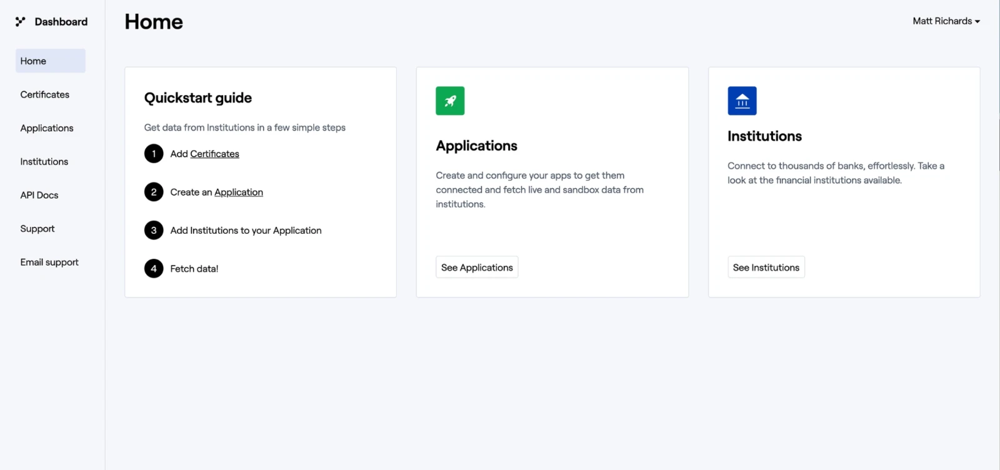
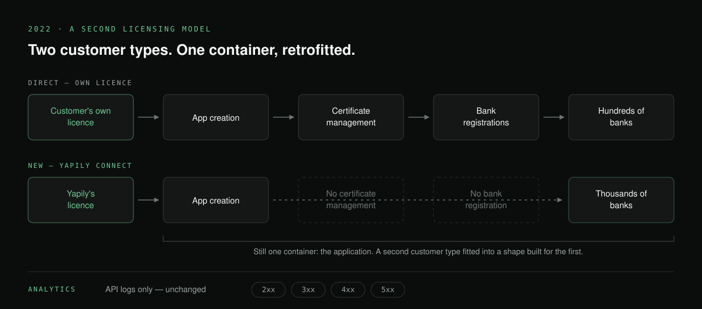
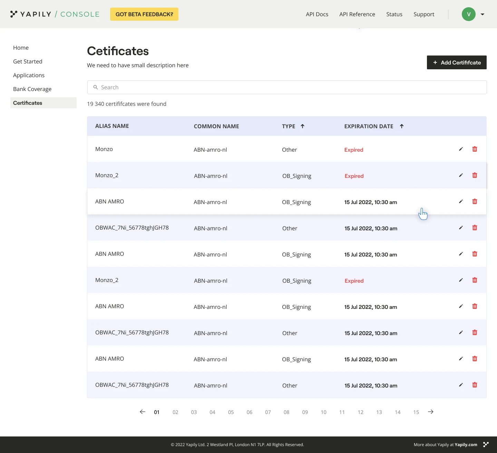
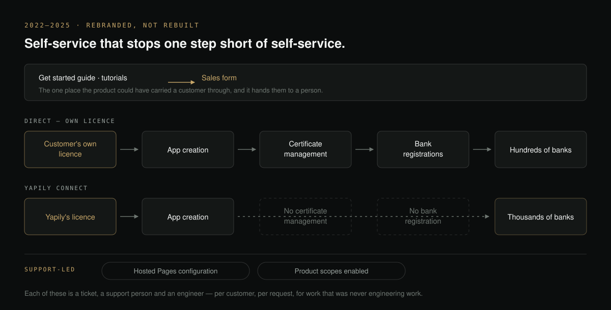
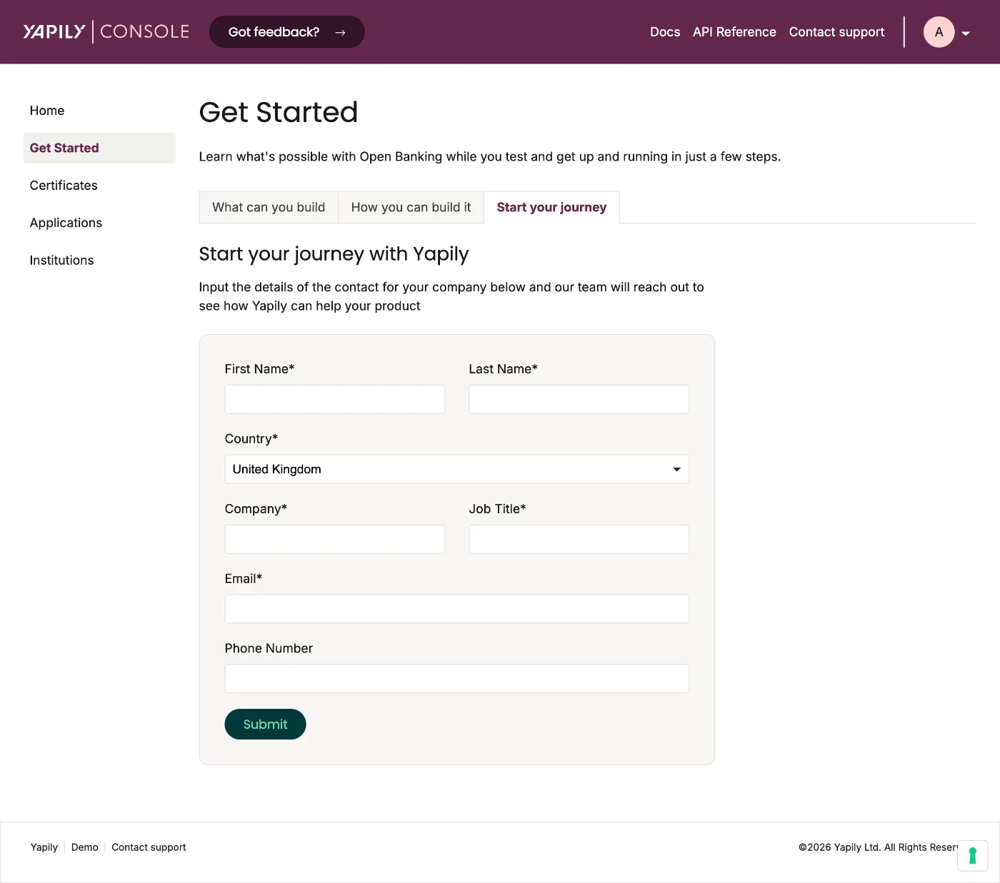

Turning a sales-led onboarding into a self-serve one
The Console is where Yapily customers sign up, manage applications, and configure their integration with the platform. Becoming a customer used to take six months to a year. This is the work to make most of that self-served — six years of a tool built for one customer type, left behind by the API it sat on top of, and then rebuilt around the customers it had never really served.

AT A GLANCE
Summary
SITUATION
The Console began as a certificate vault and application manager built for a handful of enterprise customers on one licensing model. As Yapily added products, customer types and markets, everything the Console couldn’t do was absorbed by people — support enabling features by hand, engineers making configuration changes, customer success exporting reports. Becoming a customer took six months to a year, and around 80% of the customer base is non-enterprise, on customer success’s figures, sitting through a sales-led onboarding built for somebody else.
TASK
Nobody asked me to do this. I decided it needed doing. The Console was not on the roadmap — the standing priority was launching integrations in more regions, the growth engine and what customers asked for in sales conversations — and the main resistance came from senior management on the platform side, whose objection was a fair one: Console work would take capacity away from it. So the first task wasn’t design. It was making the case, with evidence rather than opinion, that a deprioritised internal tool was one of the more expensive things in the business. Earlier attempts had failed not because the problem was unclear, but because the case had only ever been made by design, to product. Senior management made the decision to reprioritise.
ACTIONS
- Ran customer interviews to establish what people were actually blocked on, rather than restating a known complaint.
- Ran a workshop with VPs, PMs, engineering, support, design and customer success to produce one shared account of the problem instead of five departmental versions.
- Ran a two-day hackathon in which engineering, PMs, design and the implementation team worked as an outside consultancy, using only what a real customer can access.
- Mapped the journey end to end from anonymous visitor to renewal — across sales, customer success, technical services, support and operations — deliberately not a design artifact, because no single team could see the whole of it.
- Led the information architecture for a self-serve Console, and the strategic decision to split the path rather than replace it: enterprise keeps an assisted journey, everyone else self-serves.
RESULT
- The Console was prioritised, after earlier attempts had failed. The workshop is what changed it, because the cost stopped being a design opinion and became a visible amount of several teams' time.
- The Hosted Pages configurator shipped in full, giving customers self-serve control over colours, copy, layout and states. Theming requests that previously consumed a support person and an engineer per request stopped.
- Two hackathon findings were fixed directly: engineering resolved the CORS issue that had forced customers to build their own backend proxy, and the sandbox was rebuilt to contain every authentication flow — which also gave automated testing a complete environment to run against.
- The new Console is in beta, targeting weeks to a few months from first contact to go live against the previous six months to a year. It is too early for adoption figures.
The Console started as a certificate and application manager for a handful of enterprise customers on one licensing model. As Yapily added products, customer types and markets, everything the Console couldn’t do was absorbed by people — support enabling features by hand, engineers making configuration changes, customer success exporting reports.
So the cost didn’t show up as a bad interface. It showed up as headcount.
I mapped the commercial and operational journey end to end, ran a two-day hackathon where the team worked as an outside consultancy using only what a customer can access, and led the information architecture for what followed.
The strategic decision was to split the path rather than replace it: enterprise customers keep an assisted journey, everyone else gets self-service. The configurator has shipped. The rest is in beta, so it’s too early for adoption figures.
Six years in five moments
The consequence is what matters.

How I made the hidden cost visible
The first task wasn’t design. It was making the case that a deprioritised internal tool was one of the more expensive things in the business, and making it with evidence rather than opinion, because "the Console needs work" had been said before and hadn’t moved anything.
So I ran three things, each doing a different job. Customer interviews, to establish what people were actually blocked on. A workshop with VPs, PMs, engineering, support, design and customer success, to get to a shared account of the problem rather than five departmental versions of it. And a hackathon, to make the friction concrete for people who had never experienced it, because it’s easy to disagree with a research finding, and much harder to disagree with two days your own team just spent failing to onboard.
Two things became impossible to argue with.
Nobody could get live without us.
Onboarding needed so much hand-holding that there was no path through it without several people at Yapily being personally involved. Not one blocking step, a sequence of them, each requiring a different person.
Everyone got the same journey.
Google and a corner shop went through an identical process. The largest customers weren’t getting the attention their complexity warranted, and the smallest were being made to sit through a sales-led onboarding they neither needed nor wanted.
Both showed up in the same place: customers told us the timeline was a problem, and some of them acted on it.
The main resistance came from senior management on the platform side, and the objection was a fair one. The priority was launching integrations in more regions, the growth engine, and what customers asked for in sales conversations. Console work would take capacity away from it. That was a concrete bet against a vaguer one.
The workshop is what changed it. Once sales, support, customer success and engineering were in one room describing the same journey, the cost stopped being a design opinion and became a visible amount of several teams' time. The Console was prioritised, and the journey mapping and self-serve direction that follow came out of that.
Earlier attempts had failed not because the problem was unclear, but because the case had only ever been made by design, to product. It needed to be made by five functions at once.
The problem was operational, not cosmetic
That bottleneck had a shape. A visitor found the website, filled in a form, and was contacted by an SDR. From there: pre-sales conversations, KYC, contract, customer success onboarding, technical onboarding, go-live. Six months to a year from first contact to a customer in production, depending on the customer type, the sales threshold, and whose calendar had space.
That was fine for enterprise customers, who want to be sold to and expect hand-holding. It was badly wrong for everyone else, and everyone else is around 80% of the customer base, on customer success’s figures.
Mapping it before changing it
I mapped the journey end to end — anonymous visitor through to renewal, every team and tool it touched, split three ways because a buyer, a signed-but-not-live customer and a customer in production don’t want the same things. Deliberately not a design artifact: it covered sales, customer success, technical services, support and operations, because the experience customers were having was assembled from all of them and no single team could see the whole of it.
Limited access to mock banks and sandboxes, but no way to know where the limits are, because the experience doesn’t tell them.
Partial access, and no clear picture of what they’re allowed to test. The stage moves at the speed of whoever has calendar space.
One path serving two customer types. Agents want the experience to be theirs, not ours. Direct customers need help with registration and portal complexity. Neither is well served by the same journey.
The manual work was structural, not incidental
Nearly every stage past the contact form was annotated as manual, for Yapily staff and customers alike. The delay wasn’t one broken step; it was that the whole path depended on people being available.
Users and buyers were invisible to us
Before someone became a customer, we couldn’t identify them across the website, docs, dashboard or support, so we couldn’t tailor anything to what they were trying to do. People evaluating us hit limits they didn’t know existed and had no way to understand.
Two customer types were being served by one path
Direct customers and agents have materially different needs — one agent’s note in the research was simply that they didn’t want to see our logo in their experience — and the single assisted funnel served neither of them well.
Running it as an outsider
The map showed where the path depended on people. A hackathon showed what it actually felt like: two days with engineering, PMs, design and the implementation team, role-playing as an outside consultancy and using only what a real customer can access. It surfaced a 403 error because Hosted Pages wasn’t enabled by default, requiring a two-day wait for a PM to fix it; sandbox banks that had to be registered manually, with roughly a third of the pre-configured ones not working; confusion over which of three returned IDs was the Application User ID; and an undocumented CORS issue forcing customers to build their own backend proxy. None of it was new to the customers experiencing it. What was new was that our own engineers and PMs had now experienced it.
Two of the four were fixed directly off the back of it. Engineering resolved the CORS issue, removing the need for customers to build their own backend proxy. And the sandbox was rebuilt to contain every authentication flow, so a customer could exercise the whole surface without asking us to enable anything, which turned out to pay a second dividend nobody had scoped for, because it also gave automated testing a complete environment to run against.
The strategic decision: split the path
Split the path. Enterprise customers keep the assisted journey, because that’s what they want and it’s worth doing. Everyone else gets a self-serve one: find the site, get access to the Console, and onboard and implement using the product and the documentation, without waiting on a calendar.
The target is weeks to a few months from first contact to go live, against six months to a year.
Knowing who someone is and what they’re building means the experience can be tailored, and the limits of sandbox access can be stated rather than discovered.
Compliance moves from a scheduled in-person session to a queue. That single step was the most common reason a go-live slipped, and it slipped for scheduling reasons rather than substantive ones.
Analytics move into the product. Previously customer success exported this manually and sent it as reports — expensive for us, out of date for them.
Principles behind it
Identify early. Nothing can be tailored to a person you can’t recognise.
Remove scheduling as a dependency. Most of the delay was calendars, not complexity.
Make limits visible. People hitting an invisible ceiling assume the product can’t do it.
Serve teams, not individuals. Engineers, PMs, designers and finance people need different things from the same account.
Give customers their own data. Anything a CSM exports by hand is a queue with a person in it.
The beta, screen by screen
The path a customer now takes, in order: get in, test against a sandbox, verify the business, then operate what they’ve built. Every screen below is from the beta build.
The first three groups are what a non-customer can reach without speaking to anyone. The last is the same product once they’re live.
Everything that used to need a person is in here: applications and credentials across both environments, team invites with roles scoped to what each person does, KYB completed online rather than in a scheduled session, bank coverage the customer filters and curates, and analytics and billing visible directly instead of exported by a CSM.
Open the interactive ConsoleRebuilt as live markup from the Yapily UI components, with a switcher between signing up, a non-customer’s sandbox and a customer in production.
Registration used to be a contact form and a wait. It is now an account, an organisation and a working sandbox, no scheduling, and nothing enabled by a person at Yapily.
A preconfigured sandbox from signup, with mock data and every authentication flow available, the environment the hackathon proved we did not have. Production is an explicit upgrade rather than the only door.
Seven steps, saveable and resumable, ending in a signed agreement rather than a scheduled meeting. Verification was the most common reason a go-live slipped, and usually for scheduling reasons rather than substantive ones.
The same product once the customer is live. The apparatus here was built so we could tell whether a change had worked: funnels, drop-off, per-bank performance, session monitoring. It turned out to be what customers most wanted to see.
Where it stands
The Console is in beta, and the screens above are from that build. It’s too early for adoption metrics. One piece has already shipped in full: a live Hosted Pages configurator giving customers granular, self-serve control over every screen in the flow, colours, copy, layout and states. Before it, a customer wanting a theming change raised a support ticket and an engineer implemented it, every time, a support person and an engineer consumed per request, for work that was never engineering work. Those requests stopped. That is the shape of the whole Console argument in one feature: the cost wasn’t a bad screen, the cost was people.
The journey map and the information architecture are mine. The Console itself was built with product and engineering, and the self-serve initiatives were scoped jointly off the back of the mapping and the hackathon.
The same mistake, four times
Worth naming, because by now it isn’t a coincidence.
Hosted Pages was built for customers operating under our licence, and flexibility for direct-licence customers had to be retrofitted through the configurator. The Dashboard was built for the opposite type and had Yapily Connect retrofitted into it in 2022. Bank selection was built to behave one way, then met KYC customers who need the bank locked and ecommerce customers who need it changeable. And the account model assumed a customer is one company with one application, when a customer operating across regions is several organisations and a reseller has customers of their own.
Four products, and the specific wrong assumption is different every time. What’s the same is the shape of the error: we assumed the singular case. One licence. One customer type. One behaviour. One company.
The lesson isn’t anticipate everything — that’s how you get systems flexible in every direction nobody needed and rigid in the one that mattered. It’s narrower. The question worth asking early is a cardinality question: can there be more than one of this?
Asking costs a conversation. Not asking costs a retrofit, and retrofits are expensive in a way that’s easy to miss, because the bill doesn’t arrive for years and lands on whoever is there when it does.
The returning-user work is the one instance where we asked in time, which is the only reason it reads as a configuration decision rather than a rebuild. And the clearest sign the lesson landed is step one of the new onboarding, which asks whether the customer holds their own licence before anything is configured. It took two expensive retrofits to learn that a question worth asking in year six was worth asking in year one.
The broader version: the interface, the commercial process and the internal operating model were one customer experience. Once the hidden manual work was mapped, the organisation could make a deliberate choice about which customers needed assistance and which tasks should become product capability.
The long version, how it got that way
It wasn’t called the Console. The Dashboard was a certificate vault and an application manager, built for the five customers Yapily had in 2020 — Intuit among them — who held their own licence. The right scope for the company at that size, and it could tell a customer nothing about how their integration was performing. Hosted Pages didn’t exist yet, and neither did Yapily Connect.

The Dashboard predated me, so the first real piece of work was establishing what was wrong with it, not by opinion but through fourteen interviews with engineers, usability sessions with developers, internal research with customer success and support, and analytics.
Three findings shaped the response. We weren’t tailoring anything to customer type: someone evaluating the API got the same experience as a customer running in production. The documentation didn’t let people successfully test the API, which is the one thing an evaluating engineer is trying to do. And the dashboard didn’t guide anyone through their first steps, with a long list of usability problems underneath that.
The audit list is worth naming, because the pattern in it matters more than any single item. Critical information lived in modals that appeared at the wrong moment and got dismissed. Password rules were revealed only after you’d broken them. Terms and conditions could be accepted but not declined. The institution list had no pagination, which makes a list of banks unusable at any real scale. And downloading your application secret also closed the window, a sudden, unrequested action at the most sensitive point in the flow.
None of it was exotic. It’s the accumulation you get when a tool grows without anyone owning the whole of it.
So the redesign went after the sequence rather than the screens: password rules stated before you type them, error messages that say how to fix the problem, registration with a choice of email or Google rather than one path, and a quickstart guide answering what do I do next in four steps, add certificates, create an application, add institutions, fetch data.


What the redesign didn’t change was the shape. It was still a certificate vault and an application manager, made considerably better. Whether that was still the right scope for the company Yapily was becoming wasn’t a question anyone asked for another four years.
Two things arrived at once. Yapily Connect let customers operate under our licence, creating a second customer type; and new markets, Germany above all, took coverage from hundreds of institutions to thousands. The Dashboard became the Console. Scale changed what the old screens were being asked to do, a certificate list built for a handful of registrations is a different object at nineteen thousand rows.


What followed was several rebrands and almost no new functionality. Yapily was migrating from a monolith to microservices, and Console work was deprioritised behind it each time.
The consequence was gradual and then obvious. The API kept moving; the Console didn’t. New platform capability shipped with no way to reach it from the interface customers actually logged into, and a tool that had been adequate became one that couldn’t do the job, not because anyone decided that, but because everything around it changed and it stayed still.
Every gap between what it did and what customers needed got absorbed by a person. CSMs, PMs and support staff manually enabled features, curated bank coverage on a customer’s behalf, and told customers which banks supported what. None of that looked like a design problem. It looked like we needed more people.


Being that far behind turned out to be the opportunity. The question stopped being what to add back and became what the tool was for. Customer interviews and internal interviews converged on the same answer, and self-service is what came out of it.
The clearest version of the problem was in how onboarding ran: human-driven end to end, through sales, pre-sales, implementation and customer success. For corporate customers that’s appropriate, they expect hand-holding and their complexity warrants it. For SMEs, who are the large majority, it was slow and inefficient, and they were sitting through a process built for somebody else.
A new Console in beta with a self-serve path for non-enterprise customers: onboard themselves, pass KYB checks online, invite team members, enable markets, and configure integration tools like Hosted Pages — without a sequence of meetings with people at Yapily.
Worth naming the pattern, because it repeats: like Hosted Pages, the Dashboard was built for one licensing model and had to have the second one retrofitted into it. Both products were shaped by a customer type that didn’t exist yet, and in both cases the cost showed up years later. The returning-user work is the third instance, one screen, two customer types wanting opposite behaviour from it, except that one we caught before building, which is the only reason it reads as a configuration decision rather than a rebuild.